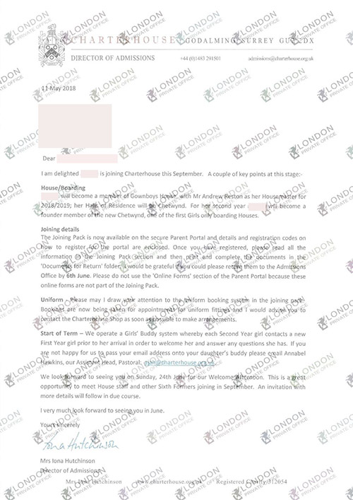

“从香港学校到英国顶级私校之路”

B 同学
11周岁
香港某国际学校
B同学的父亲是私营企业的老板，B同学目前在香港某国际学校读美国课程，但是因为父母想要为其追求更好的教育资源，对B同学寄予厚望，希望B同学在未来能够进入顶级的英国公学读中学，所以找到LPO希望能够委托我们把孩子送入顶级学校。
经过我们对B同学的评估和面试的了解，发现其实B同学的资质非常棒，因为从小在香港国际学校读书的原因，英语口语能力非常扎实。通过面试，我们了解到，B同学兴趣爱好非常广泛，并且会演奏很多乐器，比如特别擅长演奏小提琴，不仅参加过很多公开表演，还拿到过很多荣誉，这些都可以作为辅助材料在申请方面加分。另外我们还了解到在学术方面B同学的主要兴趣在Computer Science,未来想要进入AI或者计算机行业。对于B同学我们推荐了几所合适的学校，City of London Freemen‘s school，Abingdon, Charterhouse和Whitgift。
从评估报告可以看出，B同学在写作和阅读技巧方面存在一些缺陷，数学也有知识面的空缺，在面试技巧方面还是需要进行针对性的培训。
最终的问题就是孩子目标学校的确定，父母咨询是否有希望进入威敏这样的顶级公学。但是从现实考虑，距离入学不到两年时间，准备时间已经非常紧张，另外一个不合适的原因是因为威敏提供的住宿并不太符合B同学的情况，威敏13+阶段只接受周寄宿学生，周末是要回家住的，并且要求父母双方一定要有一方长居英国，因此并不适合作为目标学校。与父母经过一番解释之后，也认可了LPO导师的专业度，最终确定Charterhouse 和Abingdon作为第一第二的冲刺目标。
最终入学私校

切特豪斯公学
Charterhouse School
切特豪斯公学始建于1611年，是英国久负盛名的九大公学之一，学术成绩连续多年在全英私立学校中名列前茅。同时在音乐方面也有着优良的传统。拥有英国前首相、经济学家、作曲家、作家等等优秀毕业生。